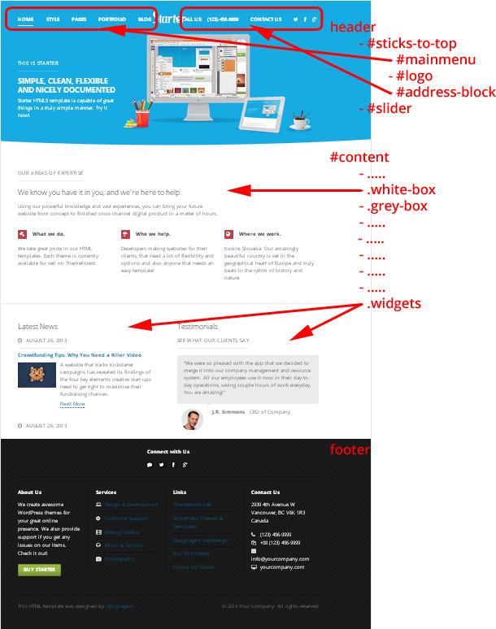
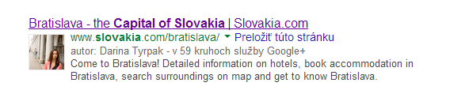

Welcome to the Starter documentation. This guide was created for everyone that wants to create their own website using this template and is not that familiar with coding. All steps are thoroughly explained, so that using this template becomes as easy as it can get!
- Getting started
- Using HTML elements & troubleshooting bad styling
- How to change the logo
- Change the contacts and social links in the header
- Setting up Google Analytics
- Setting up your homepage: slider
- Setting up your homepage: content and widgets
- Columns in footer
- Setting up layouts and sidebar for pages
- Setting up portfolio
- Setting up blog pages
- Setting up contact page, map and contact form
- Creating your own color scheme
Get Started with the Starter Template
This template is very easy to use, it has comments all over its files and clearly visible and understandable element structure. First, keep the copy of the template in a folder and copy the whole folder to your server or test folder on your computer. Make sure the index.html file is in the root of your server. This template uses PHP for a contact form, so make sure that your server has PHP installed and enabled for you. Other than that, it is pure HTML / CSS / Javascript.
Starter uses many css classes that you can re-use to create a perfect page.
For example:
- Use .big or .extrabig class if you want bigger text, use .small for smaller text.
- Use .justifyright to align the text to right.
- Use .right for an image or div element to float it right.
- Use .p50 for an element to take 50% of space.
- Use .p25 for an element to take 25% of space.
- ...etc
Tip: See editor.css in the css folder for common classes to use on elements.
These are simple.
On the homepage, you see these boxes of content, one white, one grey, another white again... For these, you would use:
- Use .greybox for a div element to make it all grey.
- Use .whitebox for a div element to make it all white.
The tricky part is that these two also need a .wrapper inside of them, otherwise the inner content would fly all over the place.
Other pages don't use .greybox and .whitebox classes, so the content section is already wrapped in .wrapper.
For other classes to use on elements, look into css/style.css and find the CONTENT ELEMENTS section.
Using HTML elements
See the elements structure in this image: 
Every page in this template has HTML elements that you can use anywhere. When copying, make sure, you kept all the element classes and/or IDs (.pricing for pricing table for example), otherwise the styling of your element won't look right.
Troubleshooting bad styling
If something goes wrong, first step is to copy the whole code of your newly created html page and paste it in the validator. This will tell you, wheter you have an unclosed tag somewhere. If everything is OK from the validator but you still experience bad styling on your element, compare it tag by tag, class by class, with the original code.
Tip: Use Google Chrome browser, right-click with your mouse the bad element and select "Inspect Element". This opens the HTML and CSS doctor in the browser, which can tremendously help you in searching for a cause of trouble.
How to change the logo
The logo of the template is an image. The image logo should be 135px in width and 60px in height. Replace the logo.png file in /images folder.
You can use the photoshop file starter-logo.psd in the psd folder if you wish.
You'll probably have to play with the menu on the left and the phone number block on the right. These two blocks should be approximately the same width, so that the logo fits nicely in between.
Font used for our logo is Hamburger Heaven.
Change the contacts and social links in the header
The #address-block in header can accommodate text like a phone number or email address. You can also have a link there, like Contact us.
Next to the contact link are the social links. The icons are Font Awesome icons and you have more of them to your disposal - they are commented, choose the ones useful for you. Fill out the href links to your social profiles, with target="_blank", it all opens in a new window.
You can use many more, just uncomment them.
Setting up Google Analytics
You'll need a gmail account for this.
For Google Analytics, go to https://www.google.com/analytics/, set up the Analytics for your website and save its UX- number. Go to the .html file (all of them) at the bottom and put the number there:
_gaq.push(['_setAccount', 'UA-XXXXXXX-X']);
Setting up your homepage: slider
The #slider is operated by a jQuery Cycle Plugin by malsup. Every .slide has 3 layers: the background image layer (the main one), the semi-transparent image layer over it (the girl on the first slider for example) and the text box with paragraphs:
- .wrapper which encapsulates:
- .slide-text (paragraphs)
- .slide-image (png image) for images in the front
- out of the wrapper: .slide-back (jpg image) for biiiig background
Big background in .slide-back
The big background jpg image (.slide-back) should be 600 px in height and cca 1600 px in width. Dimensions are not really that important, because the image will stretch itself. If you want, you can use psd/slide-back.psd photoshop file for optimal dimensions. Make sure your jpg image is saved for web (Ctrl+Alt+Shift+S in Photoshop) as jpg with 60% compression. You don't want users to download huge files. Of course you can choose not to have any background image.
Front overlaid images in .slide-image
The image on top of the background image is a png image with transparency. You can have up to 4 png images in the .slide-image element. These image will be animated from right, so make sure your image files have empty space (transparent) from the right edge. This way you can stack them on top to create nice overlay effects. These image should have a maximum height of 450 px to look best. Of course you can choose not to have any front images, just some nice background image.
Text in .slide-text
The paragraphs in .slide-text are all animated. For best experience, have 3 of them at most. The paragraphs can have various classes. In my demo, I use .sub-heading-upper and .big classes.
The script operating the cycle slider can be found at the bottom of index.html file. Here are some parameters you can change:
- fx - transition effect. Best is fade. Others can be found here.
- speed - how long does it take for the the background to fade out (in miliseconds)
- timeout - how long does the slide stays visible (in miliseconds)
For professionals, here are all options for the slider.
The subtle animation of paragraphs is handled in before and after functions.
You can have as many slides as you wish.
Warning: If you only have one .slide, the plugin will not work and you'll see blank space.
Setting up your homepage: content and widgets
Homepage comprises of many content components. There are repeated white and grey boxes and widget element at the bottom:
- .white-box
- .grey-box
- .widgets (for latest news etc.)
Using columns and centering
These boxes have different content that was mainly created using columns. Look at css/editor.css to see available column classes. It's very simple:
- Use .p50 for an element to take 50% of space.
- Use .p25 for an element to take 25% of space.
You can have a column .p10, .p15, .p20, .p25, .p30, .p33, .p40, .p50, .p60, .p66, .p70, .p75, .p80, .p90 and .p100. All representing width in percentage that they take up.
Many time you would use the .center class to center content. You can use if in conjunction with one of the percentage classes to say: this content will only take up 75% of space in the center, because I don't want it stretched that much.
Javascript
Plugins operating the components can be found at the bottom of index.html file:
- #slider (operated by Cycle)
- .sneakpeak-carousel (operated by jCarousel)
Slider
This component is explained by detail in the previous section of this documentation.
Portfolio Sneak Peak
This is a jCarousel carousel. It is composed by ul.sneakpeak-carousel li.piece items, each having the popup image and headline. The popup is controlled with the Magnific Popup plugin. Every popup image is encapsulated in a link with a .popup class. Here is the code:
<a class="popup" href="LARGE IMAGE"><img src="THUMBNAIL" alt="DESCRIPTION" /></a> <h3>DESCRIPTION</h3>
Each project is 480 x 320px. Make sure the thumbnail image is exactly that (otherwise it will be scewed inside the laptop).
If you choose to have a lot of portfolio pieces in the carousel, go to css/master.css file, locate ul.sneakpeak-carousel line and make sure it's width is sufficient (right now it's 10000px).
Map Bubbles
In css/master.css file, this is styled as .interactive-map. To control each pin's position, change it's left and top values in the html (as inline styles). Set the values as percentage to keep the map responsive. Also, play with the order of the pins, because sometimes when you hover and the bubble appears, it may lie under another pin. Changing the order of these pins will fix it. The position and order of your pins might take a little bit of trial and error.
References Table
In css/master.css file, this is styled as table.references. Each logo image is stretched within it's table cell. Best width for logos is 120px. Maximum width of 120px for each logo is defined in the css file (you can change it if you want bigger logos - don't forget to change it in the ie.css file too!).
Widget
Each widget is encapsulated in the .p50.widget div. Using of the .p50 class divides the widgets into half.
Testimonials
Each quote needs to be encapsulated in the .quote element. Inside it we'll find the blockquote (for the quote itself) and footer (for author's image). In css/master.css file, this is styled as .quote
Columns in footer
The .top section is centered and used for social buttons. Again, if you want some other social links, copy them from header (look in each html file in the header section. Many social links are commented there, so uncomment and use any of these).
Each .footerbox takes up 1/4 of content space. It's basically up to you what you put in it.
If you want to have a 3-column footer instead, go to css/master.css and locate line .footerbox. Change the width to 29%.
Setting up layouts and sidebar for pages
Page layouts are easy. You have 2 of them to your disposal (represented as a section#content class):
- .full-width - page with no sidebar
- no class - standard: content on the left, sidebar floating on the right
<section id="content" class="full-width"> CONTENT </section>
or
<section id="content"> CONTENT </section> <aside id="sidebar"> SIDEBAR </aside>
Each component in the sidebar is encapsulated in .widget element.
If you want to float your sidebar to the left and have content on the right, replace #content and #sidebar css in the css/master.css file like so:
#content { float: right; width: 70%; position: relative; z-index: 3; }
#sidebar { float: left; width: 23%; position: relative; z-index: 2; }
You just switched the floats of each element.
Or, if you don't want to make these all-around css changes, just use the .left-sidebar class on #content and also #sidebar:
<section id="content" class="left-sidebar"> CONTENT </section> <aside id="sidebar" class="left-sidebar"> SIDEBAR </aside>
Setting up portfolio
Portfolio - Classic
This portfolio has cute little laptops to present the pieces. It is operated by the Mixitup plugin, which handles its filtering.
For this, use the .laptops class on .gallery:
<div class="gallery laptops">
Code nessessery to create a category menu:
<div id="menu-portfolio-items"> <ul class="tags"> <li><a href="javascript:void(0)" data-filter="all" class="active">All</a></li> <li><a href="javascript:void(0)" data-filter="cat-1">Category 1</a></li> </ul> </div>
The .gallery has many .gallery-items and these gallery items sit in .gallery-rows.
The gallery is a standard 4-column gallery. Make sure that each .gallery-item has class .col-4 and that there are exactly 4 gallery items in each gallery row.
Each gallery item has categories as classes for filtering, make sure they correspond with the data-filter attributes in the category menu.
<div class="gallery laptops"> <div class="gallery-row"> <dl class="gallery-item col-4 CATEGORIES"> <dt class="gallery-icon"> <a href="BIG IMAGE"><img src="THUMB" alt="" /></a> </dt> <dd class="gallery-caption"> <strong>HEADING</strong> <span class="small">DESCRIPTION</span> </dd> </dl> </div> </div>
Make sure the thumbnail images are 480x320px.
Portfolio - Masonry
This is a masonry-style portfolio controlled by the isotope plugin.
The structure of a gallery is the same, you just need to change the class - add .masonry class to .gallery:
<div class="gallery masonry">
Code nessessery to create a category menu (slightly different):
<div id="menu-portfolio-items"> <ul class="tags"> <li><a href="javascript:void(0)" data-filter="*" class="active">All</a></li> <li><a href="javascript:void(0)" data-filter=".cat-1">Category 1</a></li> </ul> </div>
There is also a different javascript code at the end of the html file that drives the gallery.
Always copy the right javascript code at the end of the gallery's html file! Don't use code from laptops gallery for masonry gallery etc.
Portfolio - Photo Albums
No special javascript code is needed for this one.
Use the .photoalbums class on .gallery:
<div class="gallery photoalbums">
Setting up blog pages
Blog page consists of:
- article - one blog post
- .entry-header
- .post-thumb - wide thumbnail
- .entry-byline - meta info with author vcard
- .entry-summary or .entry-content - excerpt or content
- h1 - heading
- p - excerpt
- .entry-footer - meta info
Tip: In the author's vcard, use your google plus account link - that way your page will appear in search results like this: 
Setting up contact page, map and contact form
Open the contact.html file and go to the bottom, where the map script is. Here, fill the address twice (on two lines). Make sure that maps.google.com recognizes this address. You can play with the zoom property to get a perfect map granularity.
All files needed for the contact form to work are in the /contact folder. Open the contact.php file and change the email address to yours. You can try the contact form, but first it has to be uploaded on a server with php.
Creating your own color scheme
Each html file uses a scheme-blue.css color scheme. There are more to your disposal in the /css folder. Take any you like the most and copy it. Keep it in the /css folder. Include the link to your newly created color scheme in the <head> section of your html files.
The color scheme css file has only a couple colors. If you take a closer look, each section divided by comments has one color. So if you want to change blue for red, make sure you change the color hex code in the whole section.
For a perfect color scheme with harmonious colors, I recommend colorschemedesigner.com.